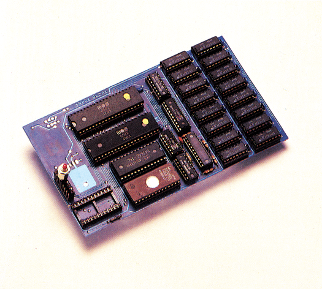

Schnell schneller - TurboTrans
TurboTrans ist der bei weitem aufwendigste Speeder für die 1541. Was diese Erweiterung leistet, lesen Sie im folgenden Testbericht.

Bis zu 200mal schneller soll es laden, und eine Diskette soll in weniger als einer Sekunde formatiert werden. TurboTrans aus dem Hause Roßmöller ist ein Floppy-Speeder der neuesten Generation und trumpft mit wahrhaft fantastischen Leistungsdaten auf.
Natürlich werden Sie sagen, ist ein Trick bei der Sache. In der Tat. Die 1541-Floppystation wäre mechanisch und auch elektronisch gar nicht in der Lage, derartige Zeiten zu erreichen. TurboTrans arbeitet hierbei mit einem Trick, der sich infolge des Preisverfalls bei Hardware-Bausteinen ziemlich bald in fast allen Computer-Bereichen durchsetzen wird.
Speicherriese
Gemeint ist eine »Speicherschlacht«. RAM-Bausteine der neuen Generation sind mittlerweile derart preiswert zu erhalten, daß große Speichermengen sehr billig zu haben sind. TurboTrans arbeitet mit einer RAM-Erweiterung von mindestens 256 und maximal 512 KByte. Dabei wird der Inhalt einer Diskette (bei 512 KByte auch zwei) vollständig in den Speicher eingelesen. Alle weiteren Floppyzugriffe laufen nun im RAM ab, und die Geschwindigkeit erhöht sich dementsprechend. Sie können sich also denken, was oben gemeint war, als wir davon sprachen, eine Diskette könne in weniger als einer Sekunde formatiert werden. Hier handelt es sich um die eingebaute RAM-Disk von TurboTrans. Für eine »echte« Diskette sind aber immerhin nur 12 Sekunden nötig, um sie in den »jungfräulichen Zustand« zurückzuversetzen.
Aufgebaut wurde TurboTrans auf dem schon bewährten Turbo Access. Die Platinen am und im Computer sind identisch, und auch das Betriebssytem des C 64 ist fast vollständig übernommen worden. Lediglich der Aufbau in der Floppystation hat sich geändert. Außer der schon erwähnten Erweiterung mit dynamischen RAM-Bausteinen, befindet sich, noch ein 32-KByte-EPROM und ein freier Steckplatz auf der Platine. Der freie Steckplatz kann dabei wahlweise mit statischem RAM oder einem EPROM belegt werden.
Die Funktionstasten des Computers sind, wie schon bei Turbo Access, nicht belegt. Befehle werden mittels der CTRL-Taste an den C 64 übergeben. Eingebaut sind dabei so nützliche Funktionen wie Directory anzeigen, Programm aus dem Directory laden, Befehl an die Floppystation senden, Basic-Programm nach »NEW« wieder zurückholen, Hardcopy vom aktuellen Textbildschirm, und so weiter. Arbeiten Sie mit dem TurboTrans plus, so stehen noch eine Reihe weiterer Einrichtungen, wie zum Beispiel Rechnen mit binären und hexadezimalen Werten, Befehle des DOS 5.1 und ein eingebauter Monitor zur Verfügung. In diesem System sind die RS232-Routinen des C 64 natürlich nicht mehr vorhanden.
Direkt vom RAM
Will man bei TurboTrans aus dem RAM laden, so muß die entsprechende Diskette zuerst einmal komplett in den Speicher gelesen werden. Das dauert bei der von uns getesteten »normalen« Version 2.7 etwa 30 Sekunden. Es lohnt sich also erst dann, wenn mit der entsprechenden Diskette eine längere Zeit über gearbeitet wird. Ansonsten kann der Benutzer auch direkt von der Diskette laden. Das funktioniert etwa 20mal schneller, als das normale Laden, es kommt also an die Ladegeschwindigkeiten von beispielsweise »Dolphin Dos« nicht ganz heran. Die Version 3.0 von TurboTrans kann jedoch auch schon im 2-MHz-Takt arbeiten, so daß der Anwender durch eine kleine Bastelei an seiner Floppystation in den Genuß einer dop-pelt so schnellen 1541 kommt. Das Einlesen einer ganzen Diskette in den Speicher dauert dann nur noch ungefähr 16 Sekunden. Roßmöller wird unter anderem einen Bausatz anbieten, der auch weniger versierten Anwendern den Umbau ermöglicht.
Die Arbeit mit TurboTrans macht dank der hohen Verarbeitungsgeschwindigkeit sehr viel Spaß. Insbesondere wenn Sie oft mit Assemblern oder Compilern arbeiten, kommen Sie bei TurboTrans voll auf Ihre Kosten. Verschwiegen werden darf natürlich an dieser Stelle auch nicht, daß das Kopieren von Disketten zur reinen Spielerei wird. Die 1541 lädt einmal eine komplette Diskette in ihren Speicher und schreibt diesen Inhalt dann auf eine andere Diskette. Wenn Sie eine Diskette im RAM stehen haben, von der zum Beispiel Grafikbilder nachgeladen werden, so deutet nur ein kurzes, verschämtes Aufblinken der LED am Laufwerk an, daß schon wieder ein Bild übertragen wurde.
Zum Lieferumfang von TurboTrans gehört übrigens ein Kopierprogramm für ein komplettes Backup einer Diskette, ein File-Kopierprogramm und ein Disketten-Monitor. In Vorbereitung ist ein Codeschloß, das die gespeicherten Daten vor unbefugten Zugriffen sichern soll. Auch dieses »Schloß« soll auf der Diskette mitgeliefert werden.
Es sei an dieser Stelle auch gleich erwähnt, daß TurboTrans laufend weiterentwickelt wird. Dabei gewährt Roßmöller einen nahezu kostenlosen Update-Service. Auch eine Erweiterung der Diskettenkapazität ist geplant. Es steht dabei jedoch noch nicht fest, ob wahlweise auf 40 oder sogar auf 41 Spuren formatiert werden kann. TurboTrans gibt es übrigens auch für den C 128 im C 128-, CP/M- und C 64-Modus. Hier ist lediglich ein kleiner Adapterzusatz im Computer erforderlich.
Wenn wir gerade bei Computern sind, so darf auch die Verträglichkeit des TurboTrans mit Originalprogrammen nicht vergessen werden. Soll eine Diskette komplett ins RAM geschrieben werden, so tut sich das System mit kopiergeschützten Programmen schwer. Hier hilft nur das Laden direkt von der Diskette. Für sehr kritische Software besteht bei TurboTrans zusätzlich noch die Möglichkeit auf das TurboAccess-Betriebs-system und schließlich auf das Original-Kernel zurückzuschalten.
Der Preis für ein Turbo-Trans-System mit 256 KByte Speicher liegt bei 449 Mark. Bei der Erweiterung auf 512 KByte sind noch 99 Mark zusätzlich fällig (soll laut Roßmöller billiger werden). Die Erweiterung kann aber prinzipiell von jedem Anwender selbst durchgeführt werden, da lediglich die fehlenden acht RAM-Bausteine nachgerüstet werden müssen.
Das System erkennt, ob eine 256-KByte- oder eine 512-KByte-Version vorliegt. Die Besitzer von Turbo Access können dieses für 249 Mark auf TurboTrans aufrüsten. Darin istjedoch nicht die Diskette mit den Programmen enthalten. Sie kostet noch einmal extra 20 Mark.
Die Preise führen einem recht eindrucksvoll vor Augen, daß TurboTrans keine Spielerei ist. Es handelt sich hierbei um eine professionelle Erweiterung für die 1541, die eine Menge an guten Leistungsmerkmalen beinhaltet. Für Programmierer, die sehr viele Floppyzugriffe bei ihrer Arbeit benötigen, ist TurboTrans sicherlich eine enorme Erleichterung. Für den Normalverbraucher, der manchmal ein wenig spielt oder nur gelegentlich programmiert, ist das System sicher ein paar Nummern zu groß. Hier genügen auch weniger aufwendige Speeder.
Auf lange Sicht dürfte sich die Arbeitsweise, wie sie von TurboTrans demonstriert wird auf dem Markt jedoch durchsetzen. Speicherbausteine sind heutzutage ziemlich preiswert. Für einen 512-KByte-Computer hätten Sie vor ein paar Jahren sicher sehr viel tiefer in die Tasche greifen müssen
(ks)Info: Roßmöller GmbH, Finkenweg 1, 5309 Meckenheim